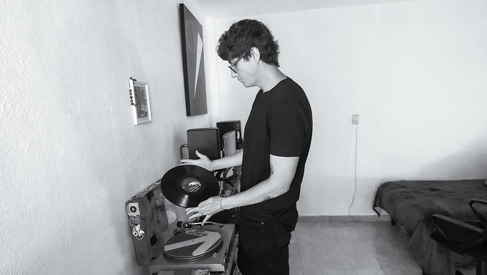

Emilio Bodet
Ciudad de México, Benito Juárez
Artes y Comunicación Digitales.
29 años.
Un año y medio viviendo en Lerma.
$2150 de arrendamiento.
galería
Testimonio.
"Escuchar música es lo que me hace sentir dentro de mi espacio, tambien leer, porque simplemente, cuando hago ese tipo de actividades me siento tranquilo, y más porque en donde estoy no hay ruido, no hay quién me moleste, son actividaes que normalmente no puedo hacer en otros sitios, sin interrupciones..."